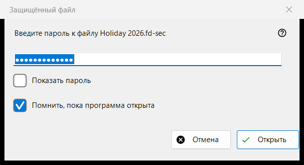
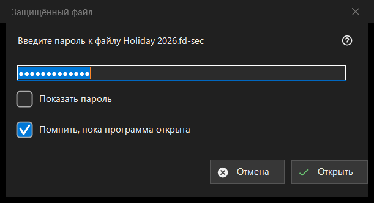

Защищённый файл
Назначение
Запрашивает пароль защищённого контейнера - файла .fd-sec, - когда он оказывается на экране. Окно появляется, когда вы нажимаете Enter или щёлкаете заблокированный файл, и само, когда вы останавливаетесь на таком файле; слайд-шоу пропускает защищённые файлы и считает их. Содержимое показывается из памяти: расшифрованное на диск не записывается. Только современный просмотрщик.


Порядок действий
- Введите пароль; он скрыт.
- Отметьте «Помнить, пока программа открыта», если другие контейнеры закрыты тем же паролем.
- Нажмите «Открыть» (Enter).
- «Отмена» (Esc) оставляет файл закрытым.
Элементы окна
Пароль
Запрос называет файл. «Показать пароль» вначале выключено. Пароль берётся в точности как набран и проверяется вне главного потока, поэтому просмотрщик не зависает, пока работает медленное получение ключа; он никогда не записывается ни в реестр, ни в файл, ни в хранилище Windows.
Помнить, пока программа открыта
По умолчанию отмечено. Пароль держится в памяти до закрытия программы и только после того, как с ним действительно открылся контейнер; затем просмотрщик молча пробует его на следующих контейнерах и спрашивает, только если он не подошёл.
Отказ и пустой пароль
После неудачной попытки окно возвращается со строкой «Не открылось: пароль может быть неверным, файл может не быть контейнером, либо его изменили.» Эти случаи выглядят одинаково намеренно: неверный ключ и изменённый байт различить нельзя. Повреждённый или неподдерживаемый контейнер получает собственное сообщение и окна пароля не вызывает. Пустой пароль принимается, но первое нажатие Enter показывает «Пустой пароль - это не защита: такой файл лишь скрыт от беглого взгляда. Нажмите ещё раз, чтобы открыть.», а второе открывает файл.
Отмена
«Отмена», Esc и кнопка закрытия окна - один путь, он ничего не меняет. На месте файла остаётся надпись «Нужен пароль - нажмите Enter или щёлкните по файлу», и пока открыта эта папка, просмотрщик больше не спрашивает пароль для него. Enter или щелчок по файлу спрашивает снова.